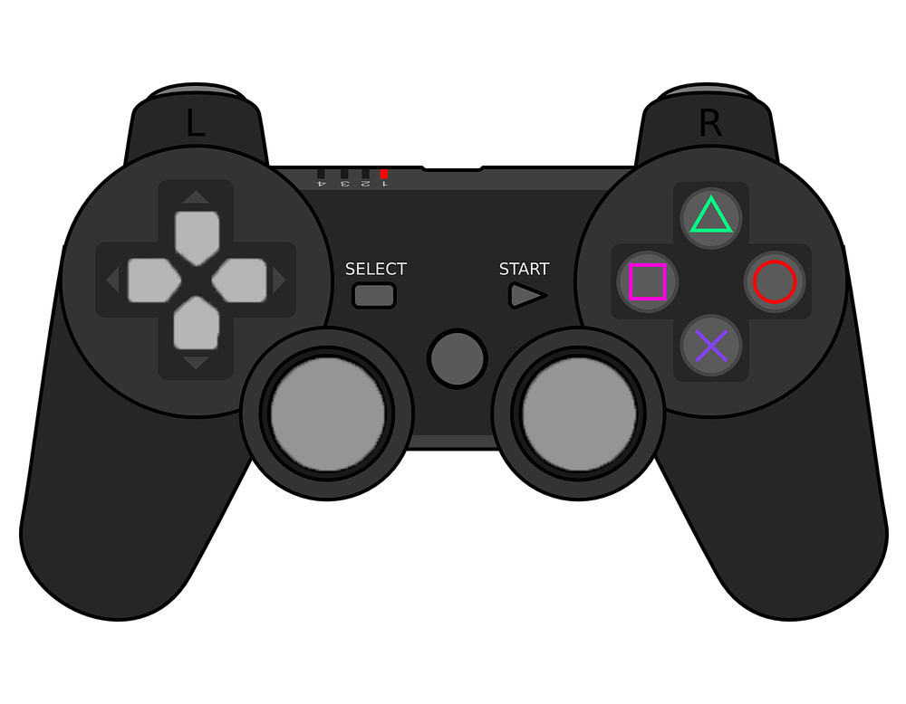

If you have a Playstation 5 and are looking for some great games to play, you've come to the right place! Below you'll find a curated list of my recommendations, along with some information about each game.
The list is based on games I have personally played and enjoyed, as well as games that have received critical acclaim. I hope you find something you like!
Short on time? Skip straight to my top picks list below.
I've been gaming on PlayStation consoles since the PS2, and the PS5 has honestly been the most consistent generation for quality exclusives I've seen. It's not just about graphics either — the DualSense controller, near-instant load times, and 3D audio have genuinely changed how certain games feel to play.
Before I started keeping this list, I used to buy games purely based on hype or launch-week reviews, and got burned more than once by titles that looked amazing in trailers but fell apart after the first few hours. So everything below is something I've actually finished, not just started.
I also try to update this page whenever a new game earns a permanent spot on my list, rather than chasing whatever's trending that month. A "classic" recommendation should still hold up a year later, not just during launch week hype.
| Game | Genre | Why It Made the List |
|---|---|---|
| God of War Ragnarök | Action | Refined combat, emotional story, PS5 exclusive |
| Elden Ring | Action RPG | Best-in-class open world Soulslike |
| Horizon Forbidden West | Action RPG | Technical showcase, massive boss fights |
| Demon's Souls | Soulslike | Launch title that proved PS5's power |
| Astro Bot | Platformer | Pure joy, built around the DualSense controller |